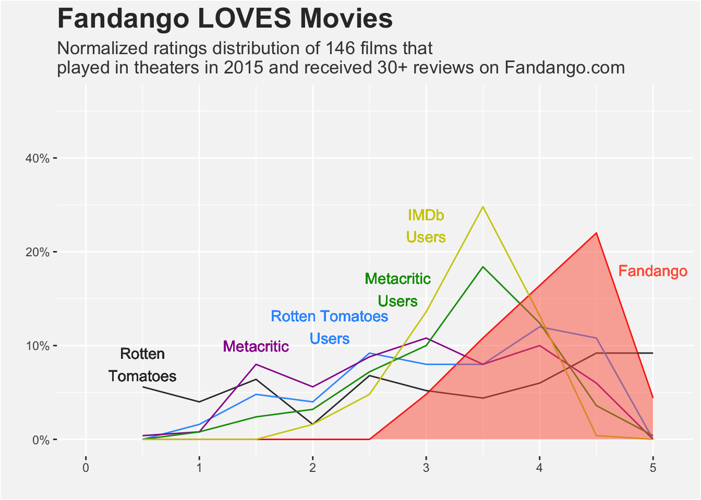
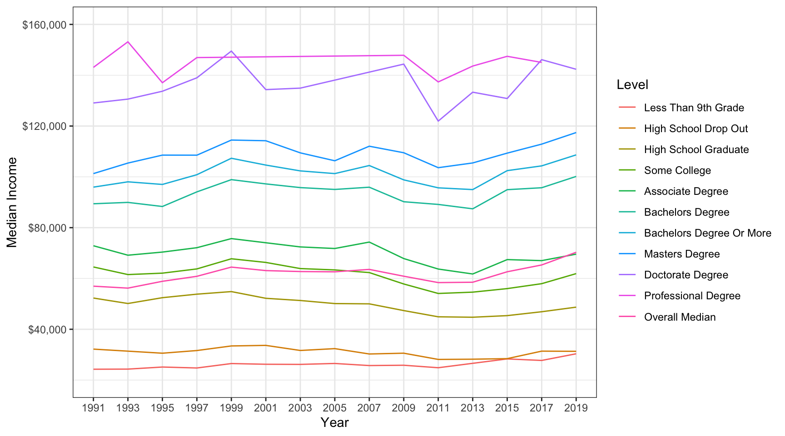

pacman::p_load(
tidyverse,
fivethirtyeight,
rvest,
httr,
janitor
)Web Extraction
Introduction
In this project, I will work with online sources to recreate already produced data as a challenge. I will demonstrate my ability in data extraction, cleaning, and visualization.
Movie Data
538 is a website that focuses on opinion poll analysis, politics, economics, and sports blogging. It was created and is currently run by Nate Silver, who has become famous for his writing and work on the site. I found this interesting article linked here about how fandango has skewed ratings for a variety of reasons, when rating movies. Below is the recreation of the plot containing all of the critics and their ratings, along with more conclusions. I have kept the code to a minimum on the final rendering, but if you wish to view the code please checkout the GitHub repository here.
fandango_data# A tibble: 10 × 2
rating count_fan
<dbl> <dbl>
1 0.5 0
2 1 0
3 1.5 0
4 2 0
5 2.5 0
6 3 12
7 3.5 27
8 4 41
9 4.5 55
10 5 11rt_data# A tibble: 10 × 2
rating count_rt
<dbl> <dbl>
1 0.5 14
2 1 10
3 1.5 16
4 2 4
5 2.5 17
6 3 13
7 3.5 11
8 4 15
9 4.5 23
10 5 23rt_user_data# A tibble: 10 × 2
rating count_rtu
<dbl> <dbl>
1 0.5 0
2 1 4
3 1.5 12
4 2 10
5 2.5 23
6 3 20
7 3.5 20
8 4 30
9 4.5 27
10 5 0mc_data# A tibble: 10 × 2
rating count_mc
<dbl> <dbl>
1 0.5 1
2 1 2
3 1.5 20
4 2 14
5 2.5 22
6 3 27
7 3.5 20
8 4 25
9 4.5 15
10 5 0mc_user_data# A tibble: 10 × 2
rating count_mcu
<dbl> <dbl>
1 0.5 0
2 1 2
3 1.5 6
4 2 8
5 2.5 18
6 3 25
7 3.5 46
8 4 31
9 4.5 9
10 5 1imdb_user_data# A tibble: 10 × 2
rating count_imdbu
<dbl> <dbl>
1 0.5 0
2 1 0
3 1.5 0
4 2 4
5 2.5 12
6 3 34
7 3.5 62
8 4 33
9 4.5 1
10 5 0# Final data set and plot
df <- merge(fandango_data,
c(rt_data, rt_user_data, mc_data, mc_user_data,imdb_user_data)) %>%
select(rating,
contains("_"))
df rating count_fan count_rt count_rtu count_mc count_mcu count_imdbu
1 0.5 0 14 0 1 0 0
2 1.0 0 10 4 2 2 0
3 1.5 0 16 12 20 6 0
4 2.0 0 4 10 14 8 4
5 2.5 0 17 23 22 18 12
6 3.0 12 13 20 27 25 34
7 3.5 27 11 20 20 46 62
8 4.0 41 15 30 25 31 33
9 4.5 55 23 27 15 9 1
10 5.0 11 23 0 0 1 0
Conclusions
My method was to take the ratings data set to calculate all of the rounded ratings for Fandango, Rotten Tomatoes, Rotten Tomatoes users, Metacritic, Metacritic users, and IMDb users, then plot them to demonstrate the major difference in the ratings for Fandango compared to the rest. I did this by reading in the data set as a .csv, finding the respective amount of votes for each rating, combining all of the sets of data of each critic, and changing missing values to 0. With the final data set and various aesthetics, I was able to produce this plot.
The original article goes into detail regarding the statistics and theories behind this data, but simply by observing the plot, there is an obvious trend of Fandango having higher ratings than the rest. There is not much more interpretation from this plot, but it was good practice to be able to recreate.
Some issues I ran into was finding a way to put the gray fill color underneath all of the lines, as I could only maneuver my way to get one using geom_area(). Also, I could not find a package containing aesthetics for stars for the x axis: the graph on the page contains stars on the bottom of the graph but I did not find any in my research. Fortunately, my greatest issues were primarily in the aesthetics department and not so much in the technical area.
HTML
In this section, I will create a similar graph from Wikipedia by using html extraction code to find the data within the html format. The article touches on educational attainment within the United States, found here. It includes several excellent graphs and charts representing different types of data involving education levels, institutional racism and gender bias, for instance. In particular, selected to find the correlation between median income and degree graduated as time progresses. Here is the original data set:
education <- read_html('https://en.wikipedia.org/wiki/Educational_attainment_in_the_United_States') %>%
html_elements('table.sortable') %>%
html_table()
education[[1]]
# A tibble: 3 × 12
Criteria Crite…¹ Overall Less …² High …³ High …⁴ Some …⁵ Assoc…⁶ Bache…⁷
<chr> <chr> <chr> <chr> <chr> <chr> <chr> <chr> <chr>
1 Median indivi… Male, … $51,297 $30,018 $30,065 $40,901 $46,851 $51,734 $67,399
2 Median indivi… Female… $37,137 $19,802 $19,612 $27,203 $31,136 $34,951 $49,011
3 Median househ… Median… $45,016 $18,787 $22,718 $36,835 $45,854 $51,970 $68,728
# … with 3 more variables: `Master's degree` <chr>,
# `Professional degree` <chr>, `Doctorate degree` <chr>, and abbreviated
# variable names ¹Criteria, ²`Less than 9th grade`, ³`High school drop-out`,
# ⁴`High school graduate`, ⁵`Some college`, ⁶`Associate degree`,
# ⁷`Bachelor's degree`
[[2]]
# A tibble: 16 × 12
Year Overa…¹ Less …² High …³ High …⁴ Some …⁵ Assoc…⁶ Bache…⁷ Bache…⁸ Maste…⁹
<chr> <chr> <chr> <chr> <chr> <chr> <chr> <chr> <chr> <chr>
1 1991 $56,965 $24,270 $32,189 $52,293 $64,525 $72,877 $89,407 $95,952 $101,2…
2 1993 $56,197 $24,320 $31,388 $50,142 $61,533 $69,155 $89,941 $98,040 $105,4…
3 1995 $58,881 $25,138 $30,578 $52,433 $62,092 $70,385 $88,330 $97,011 $108,5…
4 1997 $60,849 $24,762 $31,629 $53,821 $63,756 $72,110 $94,082 $100,8… $108,5…
5 1999 $64,474 $26,506 $33,436 $54,833 $67,755 $75,694 $98,901 $107,3… $114,4…
6 2001 $63,100 $26,229 $33,656 $52,190 $66,311 $74,058 $97,223 $104,6… $114,2…
7 2003 $62,726 $26,178 $31,656 $51,326 $63,894 $72,416 $95,766 $102,3… $109,4…
8 2005 $62,618 $26,540 $32,381 $50,118 $63,363 $71,795 $95,042 $101,2… $106,3…
9 2007 $63,566 $25,716 $30,273 $50,006 $62,320 $74,326 $95,923 $104,4… $112,0…
10 2009 $60,884 $25,843 $30,583 $47,358 $57,828 $67,833 $90,205 $98,810 $109,4…
11 2011 $58,376 $24,860 $28,132 $44,907 $54,093 $63,712 $89,142 $95,674 $103,6…
12 2013 $58,515 $26,596 $28,220 $44,741 $54,615 $61,762 $87,416 $94,989 $105,4…
13 2015 $62,636 $28,329 $28,441 $45,373 $56,012 $67,428 $94,952 $102,4… $109,3…
14 2017 $65,314 $27,729 $31,392 $46,901 $57,949 $67,022 $95,712 $104,3… $112,8…
15 2019 $70,308 $30,355 $31,326 $48,708 $61,911 $69,573 $100,1… $108,6… $117,4…
16 Aver… $61,694 $26,225 $31,019 $49,677 $61,197 $70,010 $93,480 $101,1… $109,2…
# … with 2 more variables: `Professional degree` <chr>,
# `Doctorate degree` <chr>, and abbreviated variable names ¹`Overall Median`,
# ²`Less than 9th grade`, ³`High school drop-out`, ⁴`High school graduate`,
# ⁵`Some college`, ⁶`Associate degree`, ⁷`Bachelor's degree`,
# ⁸`Bachelor's degree or more`, ⁹`Master's degree`
[[3]]
# A tibble: 31 × 5
Group % with college deg…¹ % wit…² % wit…³ % wit…⁴
<chr> <int> <int> <int> <int>
1 Hindu 77 11 10 2
2 Unitarian Universalist 67 23 9 1
3 Jewish 59 22 16 3
4 Anglican 59 32 8 1
5 Episcopal Church (United States) 56 28 14 2
6 Presbyterian Church (USA) 47 25 24 3
7 Buddhist 47 33 18 2
8 United Church of Christ 46 21 26 7
9 Atheist 43 31 22 4
10 Agnostic 42 36 21 1
# … with 21 more rows, and abbreviated variable names ¹`% with college degree`,
# ²`% with some college`, ³`% with high school diploma`,
# ⁴`% with less than high school diploma`As you can see, this is lengthy and fairly messy due to different characters ($ and ,). I was able to manipulate this data set and transform it into three different columns that are useful to the graph I am choosing to create:
# A tibble: 158 × 3
year Level Income
<chr> <fct> <dbl>
1 1991 Overall Median 56965
2 1991 Less Than 9th Grade 24270
3 1991 High School Drop Out 32189
4 1991 High School Graduate 52293
5 1991 Some College 64525
6 1991 Associate Degree 72877
7 1991 Bachelors Degree 89407
8 1991 Bachelors Degree Or More 95952
9 1991 Masters Degree 101281
10 1991 Professional Degree 143090
# … with 148 more rowsHere is the final graph:
ggplot(data = df, aes(year, med_income, color = Level, group = Level)) +
geom_line() +
labs(x = 'Year',
y = 'Median Income') +
scale_y_continuous(limits = c(20000,160000), labels=scales::dollar_format()) +
theme_bw()
Conclusions
This graph does well to show that the higher level of degree one achieves, the higher the income will be, on average. The phrase, “on average,” is key in this analysis because around the years 1999 and 2015, doctorate degrees generally had a higher median income than the professional degrees, which is the opposite for the rest of the given time period, for one example. One interesting allusion that I noticed was that the general trend of each line decreases around 2009-2011, most likely due to the recession that took place around 2008.
A problem I ran into were sorting the legend of the graph: the titles of each of the lines go in descending order from how they appear on the graph. This is not a massive issue, but it would improve my graph even more.